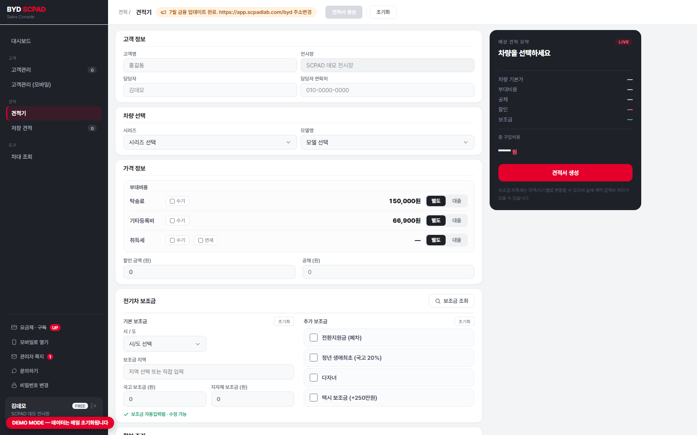
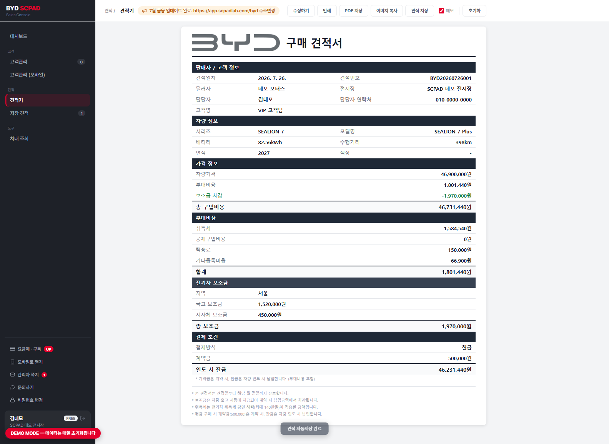
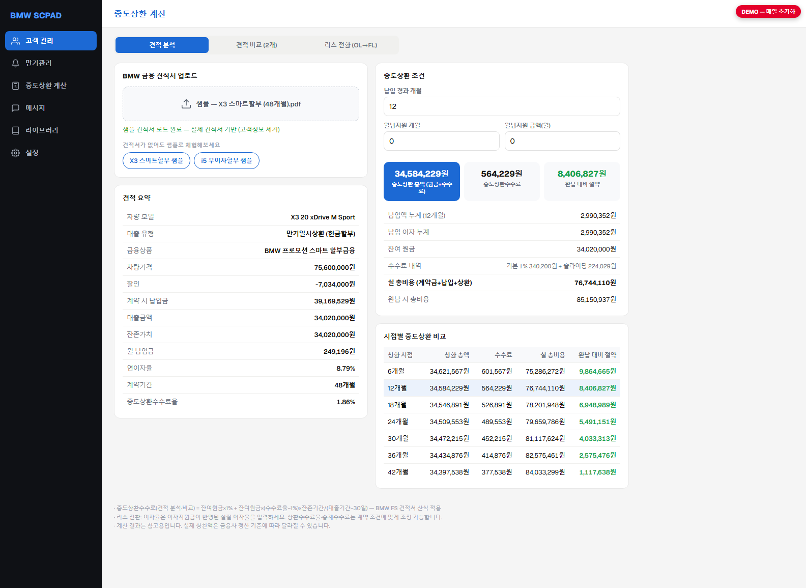
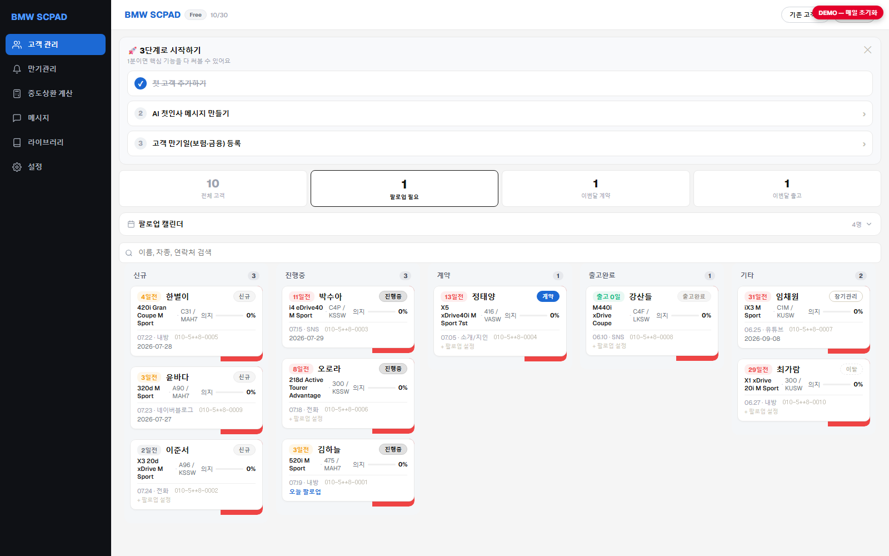
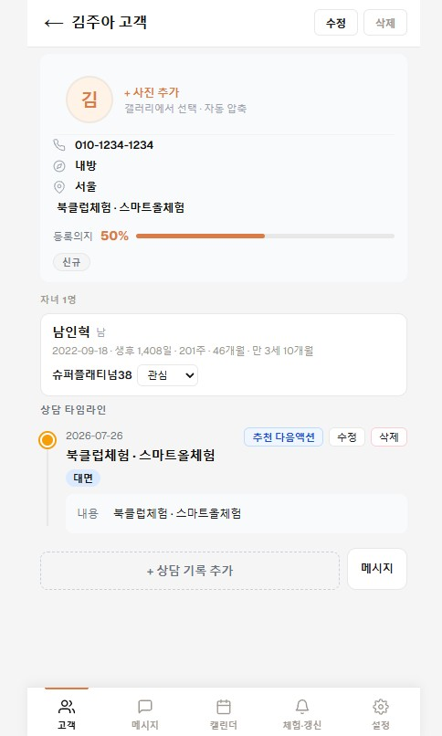
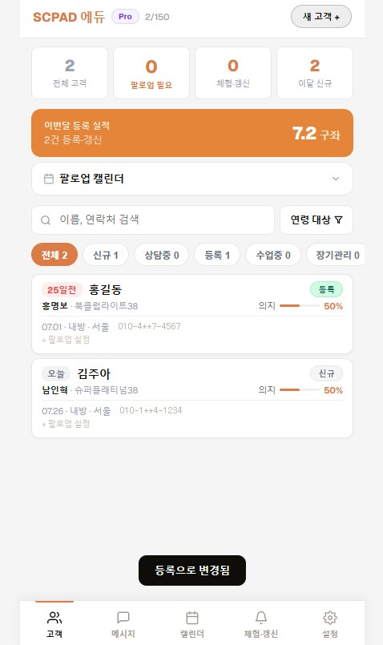
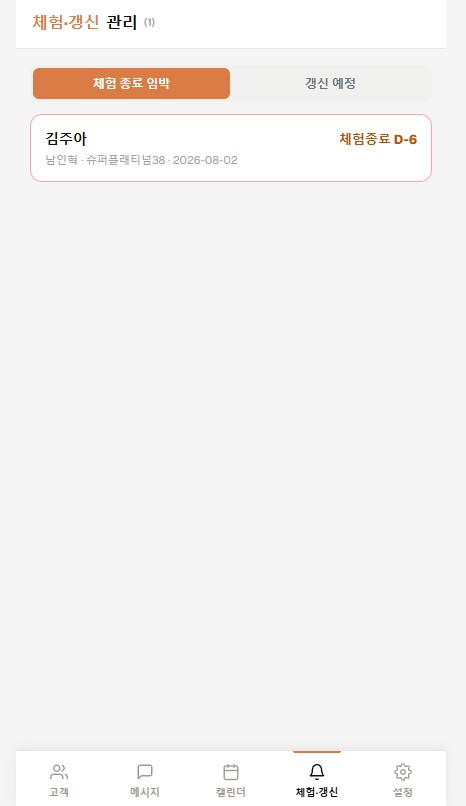
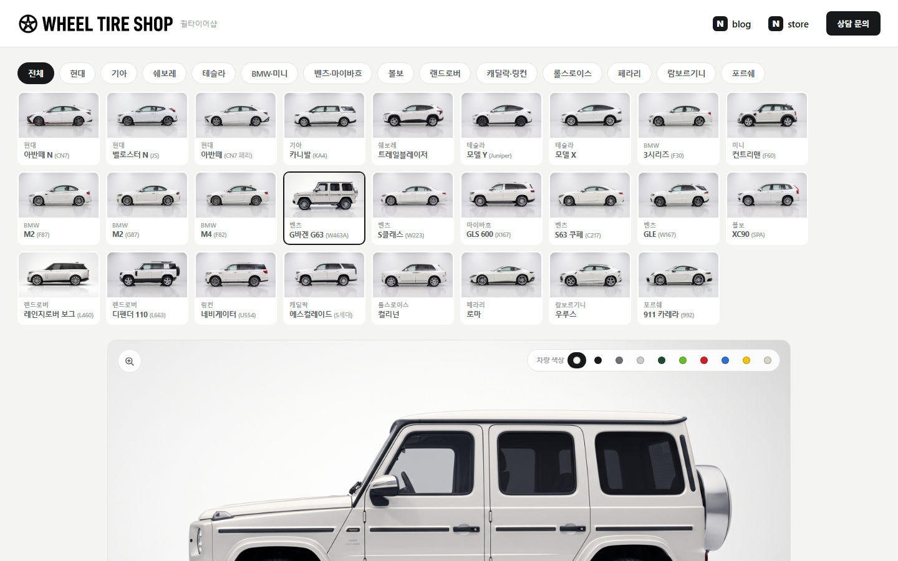
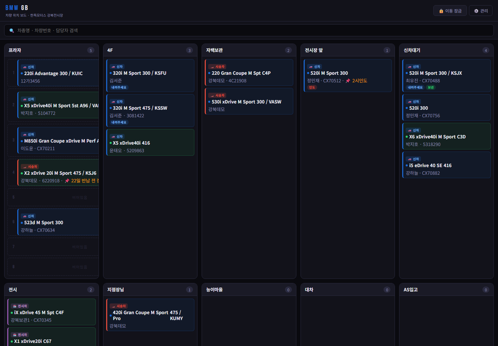

전자공학을 전공하고 연구실에 있다가, 자동차 영업으로 5년 5개월을 보냈습니다. 이력이 튀어 보이지만 저는 그 두 경험이 만나는 지점이 제 자리라고 생각합니다.
현장에 있으면 무엇이 불편한지는 알지만 고칠 방법이 없습니다. 개발을 알면 만들 수는 있지만 무엇을 만들어야 하는지 모릅니다. 저는 운 좋게 양쪽에 다 있어 봤고, 그래서 불편한 걸 발견하면 그냥 만들어 버리는 습관이 생겼습니다.
고객이 "중간에 갚으면 얼마예요?"라고 물을 때마다 견적서를 뒤지던 게 시작이었습니다. 그 계산기 하나가 지금은 전시장 9곳이 쓰는 AI 내장 CRM이 됐습니다. 아래는 같은 방식으로 만든 다섯 가지입니다.
계산기 하나에서 시작해, 전시장 9곳이 쓰는 유료 SaaS가 됐습니다.

자동차 영업의 하루는 이렇게 흘러갑니다. 리드가 들어오고 → 상담하고 → 견적을 내고 → 계약하고 → 출고하고 → 관리합니다. 이 구간마다 도구가 따로 있거나 아예 없었습니다. SCPAD는 그 전 구간을 하나에 넣었습니다.

BMW에서 영업할 때 고객이 자주 묻는 질문이 있었습니다. "3년 타다가 중간에 갚으면 얼마 나와요?"
답하려면 금융 견적서 PDF를 열어 대출금액·이자율·기간·중도상환수수료율·잔존가치를 눈으로 찾고, 그걸로 잔여원금과 수수료를 계산해야 했습니다. 한 건에 몇 분이 걸리고 상담 중에는 그 시간을 낼 수 없습니다. 결국 "확인해서 연락드릴게요"가 되고, 그 사이 고객의 관심은 식습니다.
그래서 PDF를 넣으면 값이 바로 나오는 도구를 만들었습니다.
'early_fee_rate': [
r'중도상환수수료율?\s*([0-9.]+)%',
r'중도상환.*?([0-9.]+)%',
r'수수료율\s*([0-9.]+)%'
],12개 항목마다 정규식을 3~6개씩 뒀습니다. 금융사와 상품에 따라 견적서 표기가 조금씩 다른데, 하나로 잡으면 다른 양식에서 통째로 실패하기 때문입니다. 파싱한 값으로 6개월 간격 전 구간을 시뮬레이션해 언제 갚는 게 유리한지를 표와 그래프로 보여줬습니다.
pdfplumber와 정규식뿐입니다.
2025년 9월, 아직 LLM을 쓸 줄 모를 때였습니다.
쓰다 보니 진짜 문제는 계산이 아니었습니다. 견적을 뽑아준 고객이 누구였는지, 그때 뭘 원했는지가 남지 않았습니다. 고객은 수첩에, 견적은 엑셀에, 상담 기록은 메모장에 흩어져 있었습니다. 회사 CRM은 있었지만 관리자를 위한 물건이었지 영업사원을 위한 물건이 아니었습니다.
저는 상담을 붙잡는 힘이 부족한 영업사원이었습니다. 지나고 나서야 아까운 고객이 생각나는 일이 반복됐습니다. 그래서 계산기에 고객을 붙이고, 상담 기록을 붙이고, 다음 연락 시점을 붙였습니다.

기술 선택의 기준은 "혼자서 유지할 수 있는가" 하나였습니다.
| 제약 | 선택 |
|---|---|
| 서버를 관리할 사람이 없다 | Supabase + Vercel Serverless. 상시 켜두는 서버 0대 |
| 고객 데이터가 섞이면 끝장이다 | PostgreSQL RLS로 행 단위 격리. 앱 코드 실수로 뚫리지 않게 DB에서 차단 |
| 영업사원은 앱을 안 깐다 | PWA. 브라우저로 쓰다가 원하면 홈 화면에 추가 |
| 브랜드가 늘어난다 | 단일 코드베이스 + 런타임 브랜드 분기. BMW/BYD를 따로 배포하지 않음 |
고객 관리 쪽은 특히 신경 썼습니다. 남의 고객 정보를 맡는 일이고, 한 번 새면 서비스가 끝나기 때문입니다.
권한 검사를 애플리케이션이 아니라 DB의 RLS에 뒀습니다. 제가 혼자 만드니까, 제 실수가 곧 사고가 되는 구조를 피하고 싶었습니다.
알림은 하나로 묶었습니다. 팔로업 · 보험 만기 · 금융 만기 · 재구매 시점을 각각 만들지 않고 "언제 무엇을 알릴 것인가"를 하나의 날짜 엔진으로 뒀습니다. 알림 종류가 늘어도 로직은 늘지 않습니다.
도달은 PWA Web Push로 처리했습니다. 앱을 열지 않아도 닿아야 의미가 있기 때문입니다.
이 선택들이 합쳐지면 어떤 모양이 되는지는 그림 한 장이 빠릅니다. 브라우저 · Serverless · DB · 외부 서비스의 경계를 나누고, 그 경계를 넘을 때 무슨 권한으로 넘는지까지 표시했습니다 — 클라이언트는 anon key와 RLS로만, 권한이 필요한 작업은 서버에서 service_role로 갑니다.
기능 목록에 한 줄로 적힌 것들도 각각 판단이 있었습니다. 그중 다섯 개를 적습니다.
① 금융 숫자를 어떻게 믿게 만드나. 할부 계산이 금융사 산식과 단 1원이라도 다르면 그건 곧 고객 클레임입니다. 문제는 "내 계산이 맞다"를 무엇에 비춰 확인하느냐였습니다. 정답은 이미 있었습니다 — 금융사가 배포하는 엑셀 견적서.
그래서 검증 도구를 따로 만들었습니다. 브라우저에 엑셀 견적서를 끌어다 놓으면 LibreOffice로 전차종을 재계산해 케이스를 뽑고, 제 계산 결과와 차종별로 자동 대조해 표로 보여줍니다. 금융사가 조건표를 갱신하면 새 엑셀을 한 번 끌어다 놓는 것으로 전 차종을 다시 검증합니다.
실행은 배치 파일 더블클릭으로 만들었습니다. 검증은 자주 돌려야 의미가 있는데, 터미널을 열어야 하면 결국 안 돌리게 되기 때문입니다. 앞서 "수기 계산으로 대조했다"고 적은 절차를 이걸로 대체했습니다.
② 차대번호에서 무엇을 알 수 있고 무엇을 알 수 없나. 차대번호(VIN)로 차종을 자동 판별하는 기능을 만들면서 규칙을 두 개 세웠습니다.
| 추측 금지 | 표준 구조(ISO 3779)와 체크섬은 규격대로 구현하되, 차종 매핑은 실물 샘플로 확인한 것만 등록합니다. 코드마다 몇 대로 확인했는지를 같이 기록해 뒀습니다. |
| 못 하는 건 약속하지 않기 | 색상과 옵션은 차대번호에 애초에 들어 있지 않습니다. "나중에 되겠지"로 남겨두면 언젠가 잘못된 값을 보여주게 됩니다. 그래서 원리적으로 불가하다고 문서에 못 박고 기능에서 뺐습니다. |
해독기는 화면과 분리한 순수 함수로 두어, 샘플이 늘어날 때마다 단독으로 테스트합니다.
③ 돈을 받는 일. 정기결제는 결제를 성공시키는 것보다 해지를 제대로 처리하는 게 어려웠습니다. 빌링키를 발급받아 첫 결제를 하고, 매일 크론이 그날 청구 대상만 골라 자동 청구합니다. 해지하면 남은 이용 기간을 일할로 계산해 부분 환불하고 즉시 무료 플랜으로 내립니다. 돈이 오가는 쪽은 "되게 만들기"보다 "중간에 끊겼을 때 어떻게 되는가"가 전부였습니다.
④ 알림이 실제로 도달하게. 팔로업 알림과 출고 30일 · 90일 케어 알림을 매일 정해진 시각에 크론으로 보냅니다. 발송 시각을 하나로 고정한 건 호스팅 요금제의 크론 실행 제한 때문입니다 — 제약을 우회하는 대신 그 안에서 되는 설계를 골랐습니다.
단체 문자는 다르게 처리했습니다. 문자 발송은 각 영업사원 본인 계정으로 나가고 비용도 본인 부담입니다. 제가 문자 비용을 떠안으면 사용자가 늘어날수록 적자가 커지는 구조가 됩니다. 쓰는 만큼 본인이 내는 쪽이 서로 오래갑니다.
⑤ 실패를 어디서 멈출 것인가. 기능이 늘어날수록 곁가지가 본체를 망가뜨리는 일이 생깁니다. 세 군데에 같은 원칙을 넣었습니다.
| 가입 알림 | 신규 가입 시 제게 알림이 갑니다. 알림 전송이 실패해도 가입은 그대로 진행됩니다 — 조용히 넘어갑니다. 제 알림 때문에 사용자가 가입을 못 하면 안 됩니다 |
| AI 호출 | 상위 모델이 실패하면 아래 모델로 1회 폴백. 완벽한 인식보다 동작하는 인식 |
| 데모 초기화 | 초기화 대상을 데모 계정으로 하드코딩해 두었습니다. 인증 없이 호출돼도 실제 사용자 데이터에는 닿지 않습니다 |
AI는 기능 하나가 아니라 여러 자리에 들어가 있습니다. 자리마다 요구가 달라서 같은 방식으로 붙이지 않았습니다.
| 작업 | 모델 | 설정과 이유 |
|---|---|---|
| 명함 · 손글씨 인식 | 상위 모델 | temperature 0 · effort low — 판독이 어렵고, 같은 사진은 같은 값이 나와야 합니다 |
| 상담 메시지 생성 | Sonnet 5 | effort low — 간판 기능이라 품질을 우선했습니다 |
| 연락처 일괄 파싱 | 경량 모델 | temperature 0 — 정형 텍스트를 대량으로 처리합니다. 싸고 빨라야 합니다 |
| 메모 정리 · 다음 액션 | 경량 모델 | temperature 0 — 짧고 반복적인 작업입니다 |
추출에는 temperature 0을 씁니다. 창작이 아니라 읽기이기 때문입니다.
같은 사진을 두 번 넣으면 같은 값이 나와야 하고, 모델이 빈칸을 상상으로 채우면 안 됩니다.
그래서 프롬프트에 "확신 없으면 빈 문자열"을 규칙으로 넣었습니다. 추측해서 채우는 것보다 비워두는 게 낫습니다 — 비어 있으면 사람이 눈치채고 채우지만, 그럴듯하게 틀린 값은 그대로 저장됩니다. 화면에서 확인이 필요한 항목을 표시하는 것도 같은 이유입니다.
모델이 죽으면 기능도 죽습니다. 상위 모델 호출이 실패하면 한 단계 아래로 1회 자동 폴백합니다. 완벽한 인식보다 동작하는 인식이 낫다고 봤습니다.
API 키는 서버에만 둡니다. 브라우저에서 직접 호출하지 않고 서버리스 함수를 거칩니다. 그 자리에서 Supabase JWT를 검증하고 플랜별 월 사용량도 셉니다.
CRM을 처음 열면 화면이 비어 있습니다. 쓰려면 고객을 넣어야 하는데, 영업사원 한 명이 관리하는 고객은 보통 수백 명입니다. 300명을 손으로 옮기라고 하면 아무도 시작하지 않습니다. 제품이 좋고 나쁘고 이전의 문제입니다.
그런데 그 정보는 이미 있습니다 — 본인 휴대폰 연락처에. 영업사원들은 저장명에 정보를 욱여넣습니다.
230322 하남 김서준 고객님 씨라7
260124 530msp 박지호 남편 내방
260119윤태오 740i X7 소개 최민재부장↑ 표기 형태만 살리고 이름 · 소속은 가상 값으로 바꾼 예시입니다.
날짜 · 이름 · 차종 · 유입 · 메모가 다 들어 있는데 순서도 표기도 사람마다 다릅니다. 정규식으로는 못 풉니다. 반대로 이건 LLM이 잘하는 모양의 문제였습니다.
만들기 전에 되는지부터 확인했습니다. 실제 영업사원들의 연락처 화면에서 패턴을 뽑아 파싱 테스트 스크립트를 먼저 돌렸습니다. 기능을 다 만들어 놓고 "역시 안 되네"를 하고 싶지 않았습니다.
| 프롬프트에서 신경 쓴 것 | |
|---|---|
| 원본 줄 번호 유지 | 결과를 원본과 다시 붙여야 합니다 |
| 억지 매핑 금지 | 차종이 불확실하면 빈 문자열. 틀린 차종보다 빈칸이 낫습니다 |
| 브랜드별 표기 규칙 | 520 · 523 · 530 → The 5 · 씨라7 → SEALION 7 Plus |
| 현장 약어 사전 | ㄴㅂ → 내방 — 실제로 이렇게들 씁니다 |
| 관계 표기 분리 | "OO 남편"은 이름에서 빼고 메모로 |
그리고 파싱이 실패해도 이관은 원본 이름 그대로 진행됩니다. AI는 거들 뿐, AI가 없으면 못 쓰는 기능으로 만들지 않았습니다.
"Sonnet도 이 정도는 읽지 않나?" 이 질문에 감으로 답하고 싶지 않아서 평가 도구를 따로 만들었습니다.
손글씨 인식 하네스. 같은 사진을 모델별 × 반복 실행해 필드별 정답률을 표로 출력합니다. 정답셋을 파일로 두고, 이미지 전처리(대비 정규화) · 리사이즈 크기 · 추론 강도를 옵션으로 바꿔가며 A/B를 돌립니다.
여기서 나온 결과 하나 — 이미지 인식 강도를 낮췄더니 응답이 30~40% 짧아졌고 정확도 손실은 0이었습니다. 감으로는 "낮추면 나빠지겠지"였는데 숫자는 아니었습니다. 그대로 반영했습니다.
메시지 생성 하네스. 목적 4종 × 톤 3종 = 12조합을 전수 검증합니다. 자동 검사 7가지 — 글자수 · 이모지 개수 · 금지 표현 · 메모 반영 여부 · 계절 환각 · 사실 창작 · 서명 창작.
계절 환각이 대표적입니다. 오늘 날짜를 주지 않으면 7월에 "쌀쌀해지는 요즘"이 나옵니다. 날짜를 프롬프트에 주입해 막고, 하네스가 그게 지켜졌는지 검사합니다. 사실 창작과 서명 창작도 마찬가지입니다 — 고객이 말한 적 없는 내용을 지어내거나, 없는 직함을 서명에 붙이면 그대로 고객에게 나갑니다.
브랜드 분기를 만들고 나니 질문이 하나 남았습니다. 브랜드가 아니라 업종이 바뀌면 어떻게 되는가.
학습지 방문판매 CRM(SCPAD EDU)을 같은 뼈대로 만들어 확인했습니다. 상담사가 학부모 상담 → 무료체험 → 정식등록 → 갱신까지 관리하는 도구로, 자동차 CRM의 BMW 모드를 포크해 시작했습니다. 현재 학습지 상담사들이 베타로 사용 중이고, 나오는 문제를 받아 고치고 있습니다. (특정 학습지 회사와의 공식 제휴나 계약 관계는 없습니다.)



| 자동차 CRM | 학습지 CRM |
|---|---|
| 고객 (개인) | 학부모 — 계약 · 결제 주체 |
| — 없음 | 자녀 — 1:N, 학년 · 연령 보유 |
| 차종 | 학습 상품 · 과목 |
| 금융 · 견적 | 구독 요금제 |
| 만기 (리스 · 할부) | 체험 종료 · 갱신 시점 |
| 시승 | 무료체험 신청 |
| 출고 · 계약 | 정식 등록 |
그대로 넘어간 것 — 고객관리 · 상담기록 · 팔로업 · AI 메시지 · 자료 라이브러리 · 푸시 알림 · 구독 결제 · 온보딩. 버린 것 — 차종 선택, 금융 계산.
넘어가지 않은 것도 있었습니다. 자동차 CRM은 "고객 = 1인" 모델인데, 학습지는 돈을 내는 사람(학부모)과 대상(자녀)이 분리됩니다. 이건 재사용이 안 돼서 자녀 테이블을 1:N으로 새로 설계했습니다. 어디까지 같고 어디부터 다른지를 가르는 게 이 작업의 핵심이었습니다.
브랜드는 아예 데이터로 뺐습니다. brands 테이블에 로고 · 강조색 · 상품 라인업 · 기능 플래그를
config JSON으로 두고, 새 브랜드 추가는 DB 행 하나로 끝나게 했습니다.
코드 수정도 배포도 필요 없습니다.
설계 단계의 판단이 맞았는지는 써봐야 압니다. 상담사들에게 베타로 열고 나서 두 가지가 나왔습니다.
① 예측은 맞았고, 생각보다 더 중요했습니다. 학부모와 자녀를 1:N으로 분리한 건 설계 단계의 판단이었는데, 실제로는 한 보호자가 여러 자녀를 한 번에 계약하는 경우가 훨씬 흔했습니다. 자동차는 한 고객이 한 대를 사면 그 거래가 끝납니다. 학습지는 아닙니다 — 둘째가 크면 또 계약하고, 형제 둘을 동시에 등록하기도 합니다. 보호자 아래 여러 자녀와 자녀별 수강 프로그램까지 함께 저장되도록 다시 손봤습니다.
자녀를 넣고 나니 딸려 오는 것도 있었습니다. 학습지는 상품이 개월 단위로 갈립니다. "만 세 살"로는 어느 상품 대상인지 알 수 없습니다. 그래서 생년월일 하나만 저장하고 일 · 주 · 개월 · 만 나이를 그때그때 계산해 함께 보여줍니다. 나이는 매일 바뀌니 저장할 값이 아닙니다. 특정 월령대만 골라내는 필터도 같이 넣었습니다 — 행사 대상을 찾을 때 쓰는 방식이 그렇게 생겼기 때문입니다.
② 이건 예측하지 못했습니다. 학습지 영업은 실적을 계약 건수가 아니라 "구좌" 단위로 셉니다. 상품마다 구좌 수가 달라서, 계약을 몇 건 했는지로는 실적이 잡히지 않습니다. 자동차는 "몇 대 팔았나"로 끝나기 때문에 아예 없던 개념이었습니다. 계약당 구좌를 점수로 환산해 집계하는 구조를 새로 넣었습니다.
파는 물건이 달라도, 사람을 붙잡는 구조는 같습니다.
자동차와 학습지 두 업종에서 확인했으니, 보험 · 부동산 · 렌탈처럼 상담하고 계약하고 갱신하는 영업이라면 같은 기반 위에 올릴 수 있습니다. SCPAD를 특정 브랜드용 도구가 아니라 영업 CRM의 공용 기반으로 보게 된 계기였습니다.
EDU는 베타 사용자의 실제 상담 데이터가 들어 있어 공개 데모를 열지 않았습니다. 로그인 화면까지만 보입니다. 위 화면은 더미 데이터를 넣은 별도 계정으로 찍은 것입니다.
만든 것보다 틀린 것에서 더 많이 배웠습니다.
① 비싼 모델로 전부 돌리고 있었습니다. 처음엔 모든 요청을 성능 좋은 모델 하나로 처리했습니다. 비용 리포트를 보고서야 단순 텍스트 정리까지 최상위 모델로 가고 있다는 걸 알았습니다. 요청 성격별로 나눴습니다 — 손글씨 인식처럼 어려운 건 상위 모델, 정형 텍스트 배치는 경량 모델. 품질 저하 없이 비용이 내려갔습니다.
② 알림을 늘렸더니 앱을 껐습니다. 팔로업을 놓치는 게 영업에서 가장 아까운 손실이라 알림을 촘촘히 넣었습니다. 상담 후 3일·일주일·보름, 출고 30일·90일, 재구매 만기, 보험 갱신. 전부 놓치면 안 되는 것들이라고 생각했습니다.
사용자들이 앱을 껐습니다. 이유를 물으니 "알림이 너무 많아 어느 게 중요한지 모르겠다"고 했습니다.
놓치지 말라고 넣은 알림이, 오히려 전부를 놓치게 만들고 있었습니다.
늘리는 대신 줄였습니다. "놓치면 아까운 것만" 남기는 기준을 세우고 나머지는 화면 안에서 조용히 보여주는 쪽으로 바꿨습니다. 기능을 뺀 뒤에 사용률이 올라갔습니다.
③ 금융 숫자는 틀리면 클레임입니다. 견적 엔진은 돈을 다룹니다. 숫자 하나가 틀리면 곧바로 고객 클레임이 됩니다. AI가 준 값을 그대로 쓰지 않고 수기 계산으로 대조하는 검증 절차를 뒀고, 지금은 그 과정을 자동 회귀 검증으로 옮겼습니다.
④ 만드는 것보다 쓰게 하는 게 어려웠습니다. 제가 직접 시연하면 썼습니다. "한번 써보세요"만 하면 안 썼습니다. 제품력이 아니라 전달의 문제였습니다. 그래서 확산 경로가 이렇게 됐습니다 — 제 개인용 → 같은 팀원 → 지점 → 타 지점. 광고비를 한 푼도 쓰지 않았습니다.
전시장 9곳, 계정 59개, 주간 활성 35명. 누적 견적 1,300건 이상이 실제로 이 도구를 거쳐 나갔습니다. 정기결제(PortOne V2)를 실연동하고 PG 심사를 통과했습니다. 돈을 받을 수 있는 상태까지 만들었다는 뜻입니다.
왜 사업자까지 냈는가. 결제를 붙이려면 사업자등록이 필요했고, PG 심사를 받아야 했고, 이용약관 · 환불 정책 · 개인정보처리방침을 직접 써야 했습니다. 쓰기 편하려고, 혹은 재미로 하기에는 번거로운 절차들입니다.
목표가 "만들어 보기"가 아니라 "한 바퀴를 끝까지 돌아보기"였기 때문입니다. 기획해서 만들고, 배포해서 사람을 붙이고, 돈을 받고, 문제가 생기면 응대하고, 해지하면 환불하는 것 — 이게 제품 하나의 전체 주기입니다. 한 단계라도 건너뛰면 그 단계가 실제로 어떤 문제를 만드는지 모르는 채로 넘어갑니다.
실제로 해보기 전에는 몰랐던 것들이 있습니다. 결제는 붙이는 것보다 심사를 통과하는 게 어렵고, 해지 처리를 대충 만들면 그게 그대로 클레임이 되고, 약관에 적어두지 않은 상황이 실제로 생깁니다. 읽어서는 알 수 없고 겪어야 아는 것들이었습니다.
맡은 범위는 이렇습니다 — 기획 · 화면 설계 · 개발 · DB 설계 · 결제 연동 · 배포 · 운영 · 장애 대응 · 고객 응대. 자랑이 아니라 사실 정보로 적습니다. 넓게 해본 대신 한 영역을 끝까지 파본 경험은 부족합니다. 그게 지금 제가 팀을 찾는 이유이기도 합니다.
한계도 분명합니다. 전부 혼자 만들었으니 코드 리뷰를 받아본 적이 없습니다. 제 판단이 틀렸을 때 잡아줄 사람이 없었고, 실제로 위의 네 가지는 전부 사용자가 이탈하거나 비용이 튀고 나서야 알았습니다. 더 빨리 알 수 있는 방법이 있었을 것입니다.
데모의 중도상환 계산 메뉴에서 샘플 견적서로 파싱·시뮬레이션을 직접 눌러볼 수 있습니다.
휠·타이어 매장을 위한 장착 시뮬레이터. 의뢰를 받아 제작했고, 현재 운영 테스트 중입니다.

휠은 사진만 봐서는 감이 오지 않습니다. 제품 사진은 휠 하나만 덩그러니 있고, 손님이 궁금한 건 "내 차에 끼우면"입니다. 매장에서는 이걸 말로 설명하거나, 다른 손님 차 사진을 보여주거나, "일단 껴보시죠"로 넘어갑니다. 상담이 길어지고 결정은 미뤄집니다.
첫 설계는 당연히 실시간 생성이었습니다. 고객이 조합을 고르면 그때 AI가 이미지를 만듭니다. 조합 수에 제한이 없고 구현도 단순합니다. 계산해 보니 셋 다 문제였습니다.
| 실시간 생성 | 사전 생성 | |
|---|---|---|
| 응답 | 수 초~수십 초 대기 | 즉시 |
| 비용 | 조합을 볼 때마다 과금 | 한 번 만들고 끝 |
| 일관성 | 같은 조합도 매번 다르게 나옴 | 고정 |
세 번째가 결정적이었습니다. 손님이 같은 조합을 두 번 봤는데 다르게 보이면, 그건 기능이 아니라 하자입니다. 매장에서 상담 도구로 쓰려면 화면이 매번 같아야 합니다.
그래서 모든 조합을 미리 만들어 두는 쪽으로 뒤집었습니다. 대신 부담이 생성 단계로 넘어왔습니다. 수백 장의 이미지가 한 세트처럼 보여야 합니다. 한 장이라도 색감이나 각도가 튀면 카탈로그 전체가 아마추어처럼 보입니다.
같은 프롬프트를 넣어도 이미지 생성 모델은 매번 다른 그림을 냅니다. 한두 장이면 상관없는데, 카탈로그는 전부 "한 스튜디오에서 한 카메라로 찍은 것"처럼 보여야 합니다. 한 장씩 만들면 네 가지가 어긋납니다.
| 크기 | 차마다 스케일이 달라 경차가 SUV보다 커 보입니다 |
| 바닥선 | 높이가 안 맞아 나열하면 둥둥 떠 보입니다 |
| 프레임 위치 | 제각각이라 그리드가 흔들립니다 |
| 조명 · 배경 톤 | 달라서 한 카탈로그로 안 묶입니다 |
세 겹으로 풀었습니다.
① 생성 순서를 고정했습니다 — 앵커 참조 체인. 독립 생성은 최초 한 장뿐이고, 그 뒤로는 전부 앞 단계 결과물을 참조해 파생시킵니다.
표준 씬 앵커 (확정된 측면 1장)
→ 새 차 측면 앵커 참조: "같은 스튜디오 · 같은 카메라 · 다른 차"
→ 전면/후면 3/4 그 차의 확정된 측면을 참조
→ 색상 변형 각 각도의 확정본을 리컬러 편집 — 신규 생성 금지
→ 휠 합성 차량본 + 휠 제품샷을 입력으로색상 변형을 새로 생성하지 않고 편집으로 처리하는 게 핵심입니다.
따로 생성하면 같은 차인데 크기가 미세하게 달라집니다.
프롬프트에는 금지어도 넣었습니다. dramatic lighting과
premium advertisement style이 대표적입니다.
멋있어 보이는 키워드인데, 각도마다 톤을 갈라놓아 규격서에서 빼버렸습니다.
② 프롬프트로 안 되는 건 재서 맞췄습니다 — 픽셀 실측. 정렬은 말로 지시해서 해결되지 않았습니다. 그래서 결과 이미지를 직접 측정하는 스크립트를 만들었습니다.
| 측정 | 무엇을 재고 어떻게 쓰는가 |
|---|---|
| 휠 위치 · 지름 | 측면 이미지의 열별 어두운 픽셀 밀도에서 좌 · 우 피크를 찾아 앞뒤 휠 중심과 지름을 실측합니다. 수동으로 맞춘 값과 대조해 계통 오차 보정치를 뽑았습니다 |
| 휠 점유 비율 | 제품샷마다 프레임 대비 휠이 차지하는 비율을 재고,
scale = 기준 × 중앙값 / 개별값으로 보정해
모든 휠이 같은 크기로 렌더되게 했습니다 |
| 알로이 비율 | 알로이 면과 타이어 전체 지름의 비를 잽니다. 저편평비 제품샷일수록 알로이가 커 보여 "이 휠만 큼"으로 느껴지는 문제를 수치로 잡았습니다 |
| 검수 몽타주 | 계산된 앵커를 차량 이미지 위에 사각형으로 그려 한 장으로 몰아보게 만들었습니다 |
"눈으로 보고 맞춘다"를 "재서 맞춘다"로 바꾼 부분입니다.
③ 실패를 표로 고정했습니다. 같은 실패를 두 번 겪지 않으려고 증상 → 원인 → 해법을 규격서에 계속 누적했습니다.
| 증상 | 원인 | 해법 |
|---|---|---|
| 3/4 각도만 톤이 어둡다 | 연출 조명 키워드 유입 | 공통 규칙 키워드로 통일 |
| 차가 너무 가깝고 왜곡된다 | 프레이밍 지시 없음 | 망원 렌즈 + 프레임 점유율 명시 |
| 구형 모델로 나온다 | 세대 미명시 | 차량명에 세대 · 특징 문장 추가 |
| 후면 3/4가 측면으로 붕괴 | 측면 참조를 너무 따라감 | 전면 3/4를 참조로 바꾸고 "측면이면 안 된다"를 명시 |
규격서를 먼저 고치고 이미지를 다시 뽑는 순서로 정했습니다. 기준이 문서에 없으면 다음 배치에서 또 흔들립니다.
④ 그리고 전체를 돌리기 전에 세 장을 봅니다. 배치를 통째로 돌린 뒤 틀리면 시간과 비용을 전부 날립니다. 매번 3장짜리 파일럿을 먼저 뽑아 눈으로 확인하고, 통과해야 전체를 시작했습니다. 휠 센터캡의 브랜드 로고가 생성 중에 지워지는 일이 잦았는데, 이것도 파일럿에서 걸렀습니다 — 로고가 사라지면 그건 다른 상품입니다.
부담을 생성 단계로 몰아준 대가로 앱 쪽은 아주 단순해졌습니다.
사용자가 차량과 휠을 고르면 <img> 경로만 바뀝니다.
서버도, API 키도, 로딩 스피너도 없습니다.
의존성 없는 단일 HTML 한 장이고, 정적 호스팅에 그대로 올라갑니다.
매장 상담에 쓰는 것을 목표로 만들었고, 지금은 현장에서 돌려보며 다듬는 단계입니다. 사전 생성을 택했으니 운영 비용이 사실상 0원입니다. 손님이 몇 번을 눌러도 추가 과금이 없고 서버도 필요 없습니다. 대신 새 차종이나 새 휠이 들어오면 제가 배치를 다시 돌려야 합니다. 알고 고른 트레이드오프입니다.
의뢰받아 만든 서비스라 코드는 클라이언트 자산으로 두고, 공개 저장소에는 제가 설계한 생성 파이프라인과 일관성 기록을 정리해 올렸습니다. 보여드릴 수 있는 건 여기까지지만, 이 프로젝트에서 제가 한 판단은 대부분 그 안에 있습니다.
화이트보드와 전화 문의를 대체하기 위해 만든 웹 도구. BMW에서 5년간 겪은 문제를 퇴사 후 도구로 만들어 제안했습니다.

전시장 차량은 계속 움직입니다. 프라자 주차칸, 3층, 4층, 전시 공간, AS 입고, 자택 보관, 대차, 외부 보관소까지 흩어집니다. 관리는 전시장 데스크 한 켠에 비치된 작은 화이트보드였고, 문제는 두 가지였습니다.
하나. 갱신이 안 됩니다. 차를 옮긴 사람이 보드를 고쳐 쓰지 않으면 틀린 정보가 그대로 남습니다. 그 보드를 믿고 찾으러 갔다가 헤맵니다.
둘. 밖에서는 볼 수가 없습니다. 이게 더 컸습니다. 외부에서 고객을 응대하다 차량 위치를 확인하려면 전시장 안에 있는 동료에게 전화를 걸어 "그 차 어디 있어?"를 물어야 했습니다. 묻는 사람도 답하는 사람도 하던 일을 멈춥니다. 즉 위치 정보가 건물 안에 갇혀 있었습니다.
기능을 정하기 전에 제약부터 정리했습니다. 영업 현장에서 안 쓰이는 도구의 이유는 대개 기능이 아니라 진입 장벽이라고 봤습니다.
| 제약 | 선택 |
|---|---|
| 여러 명이 동시에 본다 | Firebase Realtime Database — 한 명이 옮기면 나머지 화면이 즉시 갱신 |
| 영업사원은 앱을 설치하지 않는다 | 설치 없는 웹. 링크 하나로 접속 |
| 로그인을 시키면 안 쓴다 | 무인증. 주소만 알면 바로 진입 |
| 예산이 없다 | 정적 호스팅 + 무료 티어. 서버 유지비 0원 |
도구를 정하고 나서 화면 규칙을 몇 가지 더 세웠습니다.
| 이동은 기본 잠금 | 화면을 열면 차가 드래그되지 않습니다. 옮기려면 잠금을 먼저 풀어야 합니다. 공용 화면이라 스크롤하다 손이 스쳐 차가 옮겨지면, 그 뒤로는 아무도 이 보드를 믿지 않습니다. 실수의 비용이 편의보다 큰 쪽은 잠가 둡니다. |
| 구역마다 다른 규칙 | 프라자는 주차칸이 번호로 정해져 있어 8칸 슬롯을 고정했고, 나머지 구역은 자유 배치입니다. 현실이 그렇게 생겼기 때문입니다 — 모든 구역을 같은 모양으로 만들면 오히려 안 맞습니다 |
| 바뀐 것만 쓰기 | 차를 옮길 때 마커 전체를 덮어쓰지 않고 위치 · 슬롯 · 시각 필드만 갱신합니다. 두 사람이 서로 다른 차를 동시에 옮겨도 서로의 수정이 지워지지 않습니다 |
| 순서 변경은 한 번에 | 구역 순서를 바꾸면 전체 순서를 한 번의 갱신으로 묶어 보냅니다. 하나씩 보내면 중간에 끊겼을 때 순서가 뒤엉킵니다 |
| 빈 화면 안 보이기 | 처음 열었을 때 구역이 없으면 기본 9개 구역을 자동으로 만듭니다. 빈 화면부터 마주하면 뭘 해야 할지 모릅니다 |
전시장에서 시연했습니다. 영업직원들과 지점장이 함께 확인했습니다. 반응은 좋았는데 하나가 걸렸습니다.
"차를 한 대씩 다 입력해야 하는 거예요?"
맞는 지적이었습니다. 차종·색상·차대번호·담당자를 차 한 대마다 손으로 넣어야 했습니다. 18대면 18번입니다. 위치 확인 시간을 줄이려고 만든 도구가 입력 시간을 새로 만들고 있었습니다.
기존 업무 흐름을 다시 봤습니다. 차량 정보는 이미 사내 딜리버리 정보 페이지에 표로 있었고, 사람들은 그 표를 매일 봅니다. 그러면 그 표를 그대로 가져오면 됩니다. 표를 드래그해 복사하면 탭으로 구분된 텍스트가 됩니다. 그걸 붙여넣는 것만으로 마커가 만들어지게 했습니다.
const c = r.split('\t'); // 표 복사 = 탭 구분
const owner = (c.length > 10 ? c[10] : c[c.length-1]); // 열 수가 달라져도 담당자 확보
const isSuv = SUV_KEYS.some(k => model.startsWith(k)); // 모델명으로 차종 자동 분류
const cartype = /데모/.test(owner) ? 'demo'
: /보관/.test(owner) ? 'display' : 'new'; // 담당자명으로 차량 성격 추론① 실무 데이터는 형태가 일정하지 않습니다. 복사 범위에 따라 열 개수가 달라집니다. 담당자 열을 고정 위치로 잡지 않고, 열이 모자라면 마지막 열을 쓰도록 폴백을 뒀습니다.
② 사람이 안 넣어도 될 건 추론합니다. 모델명 앞글자로 SUV를 가려내고, 담당자 칸의 표기로 시승차·전시차를 구분했습니다. 원래 사람이 매번 고르던 항목입니다.
③ 자동으로 넣되, 넣기 전에 보여줍니다. 파싱 결과를 표로 먼저 띄우고 확인을 받은 뒤 저장합니다. 자동 인식은 틀릴 수 있고, 틀린 채로 18건이 한 번에 들어가면 손으로 넣는 것보다 나쁩니다.
한 대씩 등록하던 것이 표 복사 → 붙여넣기 → 확인 세 동작으로 줄었습니다.
시연에서 나온 요구를 그 자리에서 받아 구조를 바꿨고, 12개 구역에 18대를 올려 실제 운영 형태로 동작하는 것까지 확인했습니다. 다만 여기까지입니다. 시연과 검토로 끝났고 정식 도입으로는 이어지지 않았습니다. 이미 그 조직을 떠난 사람이 만든 도구였고, 계속 붙어서 다듬을 자리에 있지 않았습니다.
한참 뒤에 다시 열어봤습니다. 화면이 비어 있었습니다. 에러도 경고도 없었고, 그냥 아무것도 없었습니다.
원인은 데이터베이스를 만들 때 고른 테스트 모드였습니다. 이 모드를 고르면 규칙에 만료일이 자동으로 박힙니다. 개발 중에는 열어두되 그대로 방치되는 걸 막으려는 장치입니다. 그 날짜가 지나 있었고, 그때부터 모든 읽기와 쓰기가 거부되고 있었습니다.
문제는 그 사실을 아무도 몰랐다는 것입니다. 서버가 죽은 것도, 배포가 깨진 것도 아니어서 어디에도 표시가 나지 않았습니다. 도구는 멈춘 줄도 모르게 멈춰 있었습니다. 만든 사람이 그 자리를 떠나면 들여다볼 사람도 없습니다.
익명 인증을 붙이고 만료 없는 규칙으로 바꿔 되살렸습니다.
공개 데모의 고객명·차량번호는 전부 가상 값으로 교체했습니다.
이 둘은 팔려고 만든 게 아닙니다. 해보려고 만들었습니다.
규모는 작습니다. 다만 안 해보면 모르는 것들이 있어서 손을 댔고, 만들다 보니 앞의 프로젝트들과 같은 판단이 또 나왔습니다. 그래서 둘을 함께 놓습니다.
왜 만들었나. 요즘 영업사원들은 자기 홍보용으로 유튜브에 영상과 쇼츠를 올립니다. 찍는 것까지는 하는데 자막을 넣고, 쇼츠로 자를 구간을 고르고, 썸네일을 만드는 데서 막힙니다. 그걸 덜어줄 수 있는 도구가 될지 보려고 만들었습니다.
영상 하나를 올리려면 그 셋을 다 해야 하는데, 도구가 각각 다르고 결과도 각각 눈으로 확인해야 합니다.
처음엔 완전 자동으로 만들었다가 검토형으로 뒤집었습니다. LLM이 고른 쇼츠 구간이 애매할 때가 많았고 자막은 고유명사에서 자주 틀렸습니다. 결과를 못 믿으니 결국 편집기를 다시 열게 됐습니다. 그래서 단계마다 확인·수정 화면을 넣고 자동 업로드는 아예 뺐습니다.
비용은 작업을 쪼개서 잡았습니다. 음성 인식은 로컬 GPU(faster-whisper, CUDA), "어느 구간이 쇼츠감인가"라는 판단만 LLM에 맡겼습니다. 판단은 입력이 자막 텍스트뿐이라 토큰이 적게 듭니다.
영상 재생에서도 한 번 막혔습니다. Qt 기본 플레이어가 HEVC 코덱을 탔습니다. OpenCV로 프레임을 직접 그려 코덱 문제를 피했는데, 이번엔 느렸습니다. 매 틱마다 원하는 지점을 새로 찾고 있었습니다. 순차로 읽어 넘기는 방식으로 바꾸자 약 16배 빨라졌습니다.
속도와 정확도의 저울을 설정으로 꺼냈습니다. 큰 인식 모델은 VRAM을 5GB쯤 씁니다. 배경에 다른 앱이 떠 있으면 30초짜리 작업이 몇 분으로 늘어납니다. 어차피 사람이 자막을 검토하는 흐름이라 정확도를 조금 내주고 속도를 얻는 작은 모델 선택지를 설정에 뒀습니다. 제가 정하지 않고 쓰는 사람이 고르게 했습니다.
재생 동기화는 오디오를 기준으로 두고 영상이 따라가게 했습니다. 반대로 하면 소리가 끊기는데, 사람은 그걸 훨씬 잘 알아챕니다.
제품으로 내놓지는 않았습니다. 대신 로컬 자원과 API를 어디서 갈라야 비용이 잡히는지, 완전 자동이 왜 안 되는지, 영상 같은 무거운 입력을 다룰 때 어디가 병목이 되는지를 직접 겪었습니다. 만든 것보다 알게 된 것이 목적이었던 작업입니다.
RSS 수집 → Claude가 관심사 기준으로 선별·요약 → 텔레그램 전송 → 👍/👎 수거. GitHub Actions cron으로만 돕니다. 서버 0대.
왜 만들었나. AI를 따라가야 하는데 혼자 공부하다 보니 무엇을 봐야 하는지부터 막혔습니다. 읽을 건 너무 많고 대부분은 제게 안 중요하고, 뉴스레터를 구독하면 남의 관심사가 옵니다. 제 공부를 도와줄 도구를 제가 만들어 쓰기로 했습니다. 그래서 핵심을 "요약"이 아니라 "선별"에 뒀습니다.
같은 얘기를 다시 보내지 않게 했습니다. 랭킹 프롬프트에 최근 7일 발송 제목과 이미 설명한 용어집을 함께 넣습니다. 이걸 안 넣으면 같은 이슈가 표현만 바꿔 며칠 연속 올라옵니다. LLM에게 "무엇을 고를까"를 물을 때는 "무엇을 이미 골랐는지"를 같이 줘야 합니다.
cron을 정시에서 비켰습니다. 47 22 * * * — 정시(:00)는 GitHub 러너 러시아워라
지연이 심합니다. 어중간한 분으로 두면 대기열 경쟁이 적어 실제 도착이 안정됩니다.
저장소를 그대로 상태 저장소로 썼습니다. 실행할 때마다 쌓인 로그를 저장소에 되커밋합니다. DB를 붙일 만한 규모가 아니고, 파일이 곧 히스토리라 별도 백업이 필요 없습니다. 무엇이 언제 바뀌었는지도 커밋으로 남습니다.
같은 걸 두 번 처리하지 않게 했습니다. 텔레그램에서 반응을 가져올 때 어디까지 읽었는지를 파일에 적어 두고, 다음 실행은 그 뒤부터 봅니다. 크론은 실패하면 다시 도는데, 재시도가 중복이 되면 집계가 망가집니다.
딸려 온 것이 더 많았습니다. 텔레그램 봇으로 알림을 보내고 반응을 되받는 흐름을 여기서 익혔는데, 이건 뉴스에만 쓰는 구조가 아닙니다 — 사용자에게 무언가를 보내고 반응을 받아 쌓아야 하는 서비스면 그대로 옮겨 쓸 수 있습니다. 모델 출력에 사람의 판정을 붙여 데이터로 남기는 것도 여기서 처음 해봤습니다.
| 프로젝트 | 자동으로 하되 |
|---|---|
| 마커보드 | 파싱 결과를 미리보기한 뒤 저장 |
| SCPAD | 인식이 불확실한 항목은 사람이 확인 |
| 휠 시뮬레이터 | 전체 배치 전 3장 파일럿 검수 |
| Video Cutter | 단계마다 검토 화면, 자동 업로드 제거 |
프로젝트가 달라도 결론이 같습니다. 완전 자동을 목표로 하다 매번 다시 손보는 것보다, AI가 대부분을 만들고 사람이 마무리하는 구조가 현장에서 살아남았습니다. 한 번의 선택이 아니라 반복해서 도달한 판단입니다.
두 번째로 반복된 판단입니다. 편의를 위해 켜 둔 기본값이 사고를 만든 경험이 두 번 있었습니다.
| 어디 | 기본값을 어느 쪽으로 |
|---|---|
| 마커보드 · 차량 이동 | 잠금. 공용 화면에서 손이 스쳐 차가 옮겨지면 그 뒤로 아무도 보드를 안 믿습니다 |
| SCPAD · 연락처 이관 | 전체 해제. 자동 체크가 가족 · 지인까지 고객 명부에 넣은 일이 있었습니다 |
| SCPAD · OCR 인식 | 빈칸. 확신이 없으면 채우지 않습니다. 틀린 값보다 빈칸이 낫습니다 |
| Video Cutter · 업로드 | 사람이 직접. 자동 업로드는 아예 넣지 않았습니다 |
편의를 위해 기본값을 켜 두면, 그 편의가 실수의 기본값이 됩니다.
모델 출력을 사람이 판정하게 만드는 방식은 두 가지를 써봤습니다. SCPAD에서는 정답셋과 자동 검사로(위 평가 하네스), Era에서는 실사용 중에 사람이 누르는 신호로 잡으려 했습니다. Era 쪽은 절반만 됐습니다.
모델 출력에 판정을 붙여 로그로 쌓고, 발송 내역과 조인 가능하게 설계한 것까지는 돌아갑니다. 구조는 만들어져 있습니다.
다만 아직 데이터가 부족합니다. 누적 피드백 11건이고 전부 👍입니다. 👎가 0건이라 어느 태그·소스가 실패하는지에 대한 신호가 없습니다. 지금 이 로그로는 선별 기준을 고칠 수 없습니다.
원인도 짐작이 갑니다. 사용자가 저 하나뿐이고, 마음에 드는 항목엔 손이 가지만 별로인 항목은 그냥 넘기게 됩니다. 부정 신호를 수동에 맡긴 설계 자체의 문제입니다. 열어보지 않은 링크를 암묵적 부정으로 잡거나, 판정을 강제하는 형태였어야 했습니다.
이력이 조금 다양합니다. 다만 관통하는 게 하나 있습니다.
앞에서 해보지 않고는 판단하지 않는 편이라고 적었습니다. 그래서 손댄 것들은 대개 끝까지 갔습니다.
| 연구 | SCI 논문 게재까지 |
| 카페 | 권리금을 받고 정리하는 것까지 |
| 영업 | 상담부터 출고와 재구매 관리까지 |
| SCPAD | 사업자를 내고 돈을 받는 것까지 |
분야는 매번 달랐지만 하는 일은 같았습니다. 문제를 정의하고, 방법을 정하고, 끝까지 가서 결과를 확인하는 것. 어느 챕터에서도 발만 담그고 나오지는 않았습니다.
남은 것도 있습니다. 이 문서에는 "재서 맞췄다"는 말이 두 번 나옵니다 — 휠 이미지의 정렬을 픽셀로 측정한 것, 모델 선택을 정답셋으로 검증한 것. 실험을 설계하고 결과를 기록해서 판단하던 습관은 그때 생긴 것 같습니다. 다루는 대상은 바뀌었는데 방식은 남았습니다.
그렇게 한 바퀴를 혼자 돌고 나니 제 크기도 같이 보였습니다. 1인으로 도달할 수 있는 범위는 확인했습니다. 넓게 해본 대신 한 영역을 깊게 파본 경험이 부족하고, 제 판단을 검증해 줄 사람이 없었습니다.